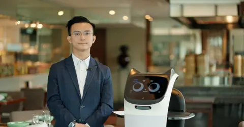
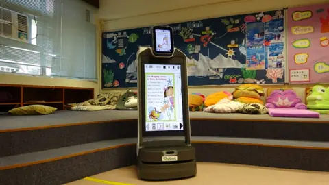
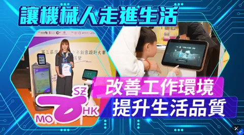
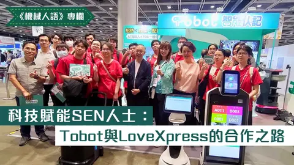
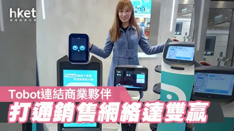
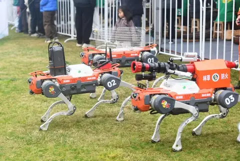
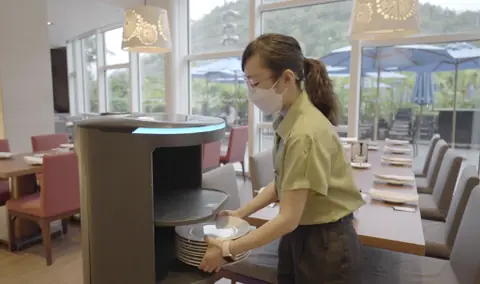
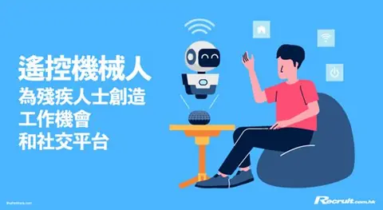

商業空間 · 酒店沙田凱悅酒店
01
客戶背景香港酒店業先驅，房務團隊需頻繁往返各樓層運送客房用品與毛巾，人手調度壓力大。
02
導入前難題房務配送高度依賴人手往返，員工難以專注於房間清潔與賓客服務本身。
03
BottiZ 方案引入 W3 梯控配送機械人，自主穿梭各樓層，自動完成客房用品配送。
房務配送效率提升 35%
員工滿意度同步提升
資料來源：Capital · 2025-07-30
客戶背景 → 導入前難題 → BottiZ 方案 → 量化成果

商業空間 · 酒店資料來源：Capital · 2025-07-30

醫療與教育 · 學校資料來源：Unwire · 2025-09-18

探討機械人方案如何透過配送機械人為酒店及餐飲業提供 ESG 解決方案，提升工作品質與營運效能。

詳述社交機械人如何成為自閉症兒童的溝通橋樑，展示機械人方案在特殊教育領域的應用深度。

報道智能方案推出的創新商業模式，讓中小企能以更低成本引入智能配送技術。

機械人方案進一步擴展至消防安全領域，透過機械人深入火場進行監控與降溫，初步數據顯示能將火災初期控制時間縮短 40%。

文匯報專訪客戶案例，展示配送機械人如何減輕樓面負擔，平均可減少 30% 樓面人力需求。
早前浸信會呂明才小學更率先引入智能機械人，讓學生從小認識 AI 的應用。

機械人雖缺乏情感，卻能扮演中性且可靠的中介角色，營造出安全、可預測的互動空間。
作為本港酒店業先驅，沙田凱悅酒店分享優化員工工作流程的寶貴經驗。
告訴我們您的行業與需求，顧問團隊會建議合適的機型組合及部署方式，並可安排免費示範。